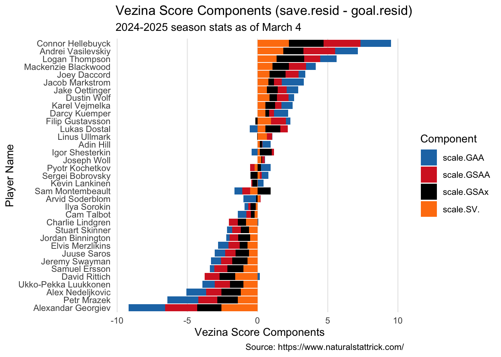
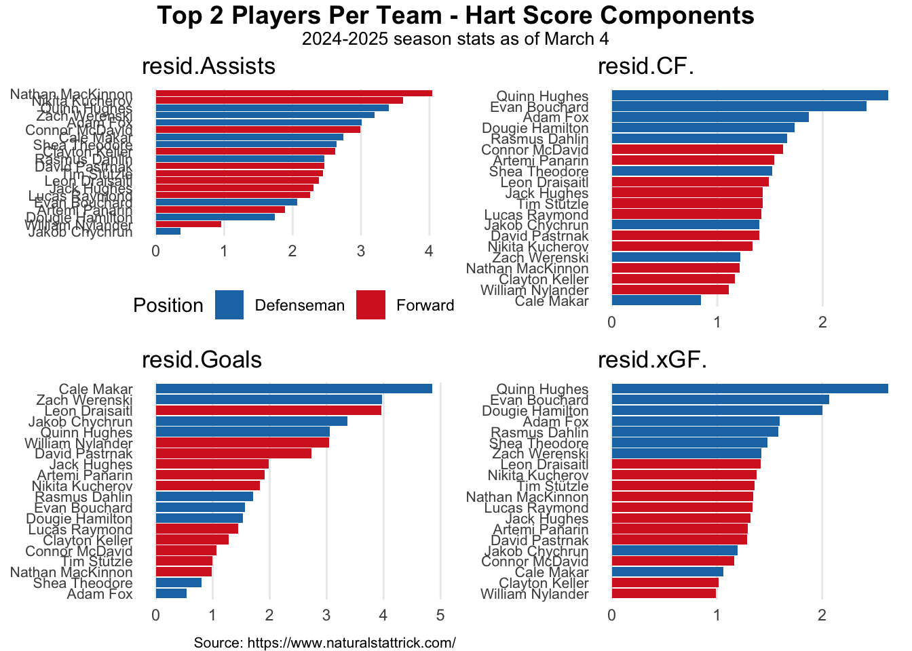
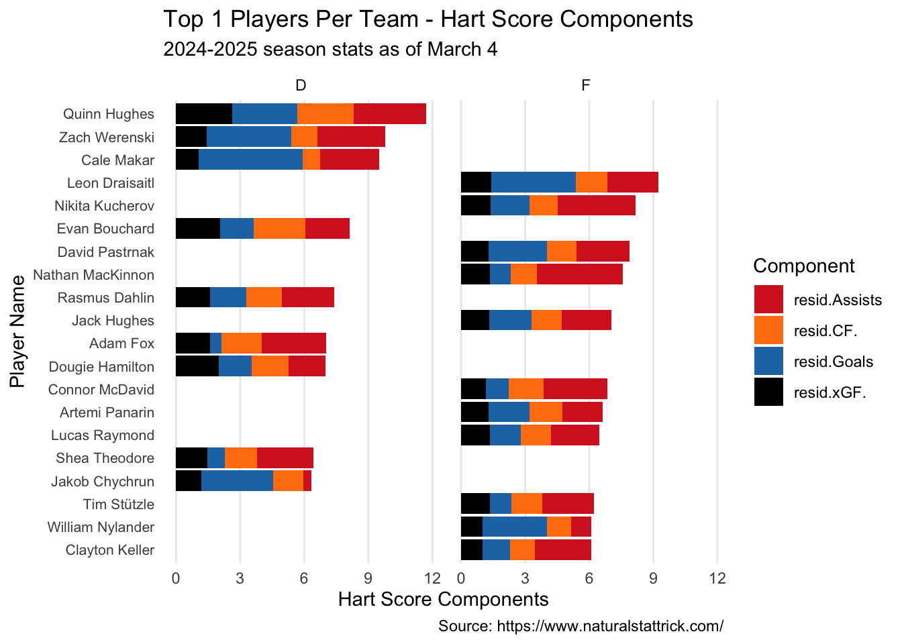
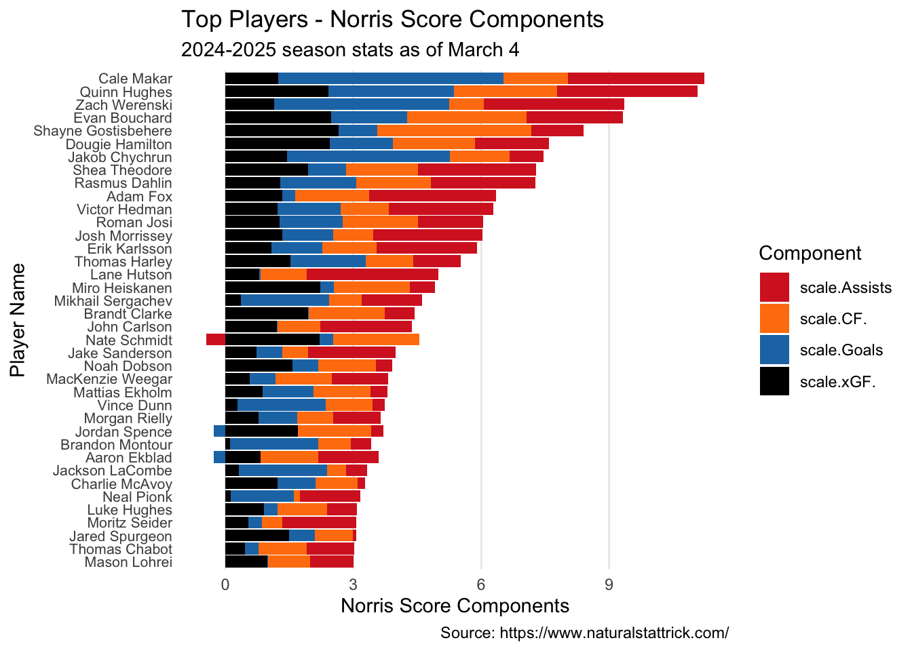

Scale.Goalies <- Goalie %>%filter(GP>25)%>%mutate(scale.SV. =scale(SV.))%>%mutate(scale.GAA =-scale(GAA))%>%mutate(scale.GSAA =scale(GSAA))%>%mutate(scale.GSAx =scale(xG.Against-Goals.Against))%>%mutate(scale.Vezina = scale.SV. + scale.GAA + scale.GSAA + scale.GSAx)%>%mutate(rank.SV. =rank(scale.SV.))%>%mutate(rank.GAA =rank(scale.GAA))%>%mutate(rank.GSAA =rank(scale.GSAA))%>%mutate(rank.GSAx =rank(scale.GSAx))Scale.Vez.plot <- Scale.Goalies %>%filter(GP >25) %>%# Pivot to long format for stackingpivot_longer(cols =c(scale.GAA, scale.GSAA, scale.SV., scale.GSAx, rank.GAA, rank.GSAA, rank.SV., rank.GSAx),names_to ="component",values_to ="value" )ggplot(Scale.Vez.plot%>%filter(str_detect(component, "scale")), aes(x =reorder(Player, scale.Vezina), y = value, fill = component)) +geom_col() +coord_flip() +scale_fill_manual(values =c("scale.GAA"="#1F77B4", "scale.GSAA"="#D62728","scale.SV."="#FF7F0E","scale.GSAx"="black") ) +labs(x ="Player Name",y ="Vezina Score Components",fill ="Component",caption ="Source: https://www.naturalstattrick.com/",title ="Vezina Score Components (save.resid - goal.resid)",subtitle ="2024-2025 season stats as of March 4") +theme_minimal() +theme(panel.grid.major.y =element_blank(),panel.grid.minor =element_blank())

HART BALLOT
Awarded to the “player judged most valuable to his team.” This isn’t necessarily the best overall player, but rather the one who contributes most significantly to his team’s success.
Code
Scale.OnIce <- OnIce.Skater %>%filter(GP >30) %>%select(Player, Position, Team, CF., xGF.) %>%mutate(Position =if_else(Position =="D", "D", "F")) %>%# Extract team after comma, or keep original if no comma existsmutate(Team =case_when(str_detect(Team, ",") ~str_trim(str_extract(Team, ",[^,]*$")), # Extract everything after the last commaTRUE~ Team )) %>%# Remove the leading comma if it existsmutate(Team =str_replace(Team, "^,\\s*", "")) %>%group_by(Position) %>%mutate(scale.CF. =scale(CF.),scale.xGF. =scale(xGF.)) %>%mutate(scale.Hart = scale.xGF. + scale.CF.)Scale.Individual <- Individual.Skater %>%filter(GP >30) %>%select(Player, Position, Team, Goals, Total.Assists) %>%mutate(Position =if_else(Position =="D", "D", "F")) %>%# Extract team after comma, or keep original if no comma existsmutate(Team =case_when(str_detect(Team, ",") ~str_trim(str_extract(Team, ",[^,]*$")), # Extract everything after the last commaTRUE~ Team )) %>%# Remove the leading comma if it existsmutate(Team =str_replace(Team, "^,\\s*", "")) %>%group_by(Position) %>%mutate(scale.Goals =scale(Goals),scale.Assists =scale(Total.Assists)) %>%mutate(scale.Hart.Ind = scale.Goals + scale.Assists)Scale.Hart <- Scale.OnIce %>%left_join(Scale.Individual, by ="Player") %>%mutate(resid.Goals =resid(lm(scale.Goals ~ Team.x, data = .)),resid.Assists =resid(lm(scale.Assists ~ Team.x, data = .)),resid.CF. =resid(lm(scale.CF. ~ Team.x, data = .)),resid.xGF. =resid(lm(scale.xGF. ~ Team.x, data = .)))# Step 1: Data frame preparationHart.Long <- Scale.Hart %>%# First calculate Hart score for each player if not already donemutate(Hart = resid.Goals + resid.Assists + resid.CF. + resid.xGF.) %>%pivot_longer(cols =c(scale.CF., scale.xGF., scale.Assists, scale.Goals, resid.Assists, resid.CF., resid.Goals, resid.xGF.), names_to ="component", values_to ="value") # Split the data into separate componentslibrary(purrr)hart_filtered <- Hart.Long %>%filter(str_detect(component, "resid"), Hart >6)# Get unique componentscomponents <-unique(hart_filtered$component)# Create a list of plots, one for each componentcomponent_plots <-map(components, function(comp) {# Filter for just this component comp_data <- hart_filtered %>%filter(component == comp)# Create component-specific plot with its own orderingggplot(comp_data, aes(x =reorder(Player, value), y = value, fill = Position.x)) +geom_col() +coord_flip() +scale_fill_manual(values =c("D"="#1F77B4", "F"="#D62728"),labels =c("D"="Defenseman", "F"="Forward") ) +labs(x =NULL, # We'll add a common x-axis label latery =NULL, # We'll add a common y-axis label laterfill ="Position") +theme_minimal() +theme(panel.grid.major.y =element_blank(),panel.grid.minor =element_blank(),axis.text.y =element_text(size =8),legend.position =if(comp == components[1]) "bottom"else"none" ) +ggtitle(comp)})# Combine the plotslibrary(gridExtra)
Attaching package: 'gridExtra'
The following object is masked from 'package:dplyr':
combine
# Add overall title and captiontitle <- grid::textGrob("Top 2 Players Per Team - Hart Score Components", gp = grid::gpar(fontsize =14, fontface ="bold"))subtitle <- grid::textGrob("2024-2025 season stats as of March 4", gp = grid::gpar(fontsize =10))caption <- grid::textGrob("Source: https://www.naturalstattrick.com/", gp = grid::gpar(fontsize =8), hjust =1)grid.arrange(title, subtitle, combined_plot, caption,heights =c(0.5, 0.3, 10, 0.3),ncol =1)

Code
# Step 2: Create the plotggplot(Hart.Long%>%filter(Hart>6, str_detect(component, "resid")), aes(x =reorder(Player, Hart), y = value, fill = component)) +geom_col() +coord_flip() +scale_fill_manual(values =c("resid.Goals"="#1F77B4", "resid.Assists"="#D62728","resid.CF."="#FF7F0E","resid.xGF."="black") ) +labs(x ="Player Name",y ="Hart Score Components",fill ="Component",caption ="Source: https://www.naturalstattrick.com/",title ="Top 1 Players Per Team - Hart Score Components",subtitle ="2024-2025 season stats as of March 4") +theme_minimal() +theme(panel.grid.major.y =element_blank(),panel.grid.minor =element_blank(),# Improve readability of player namesaxis.text.y =element_text(size =8) )+facet_wrap(~Position.x)

James Norris Memorial Trophy
Awarded to the defenseman who demonstrates “the greatest all-around ability” at the position.
Code
Norris.OnIce <- OnIce.Skater%>%filter(Position =="D", GP >30)%>%mutate(scale.CF. =scale(CF.),scale.xGF. =scale(xGF.))%>%select(Player, Team, GP, CF., xGF., scale.CF., scale.xGF. )Norris.Indiv <- Individual.Skater%>%filter(Position =="D", GP >30)%>%mutate(scale.Goals =scale(Goals),scale.Assists =scale(Total.Assists))%>%select(Player, Team, GP, Goals, Total.Assists, scale.Goals, scale.Assists )Norris<- Norris.OnIce%>%left_join(Norris.Indiv, by ="Player")%>%mutate(scale.Norris = scale.CF. + scale.xGF. + scale.Goals + scale.Assists)Norris.Plot <- Norris %>%pivot_longer(cols =c(scale.Goals, scale.Assists, scale.CF., scale.xGF.), names_to ="component", values_to ="value") %>%filter(str_detect(component, "scale"))# Step 2: Create the plotggplot(Norris.Plot%>%filter(scale.Norris >3), aes(x =reorder(Player, scale.Norris), y = value, fill = component)) +geom_col() +coord_flip() +scale_fill_manual(values =c("scale.Goals"="#1F77B4", "scale.Assists"="#D62728","scale.CF."="#FF7F0E","scale.xGF."="black") ) +labs(x ="Player Name",y ="Norris Score Components",fill ="Component",caption ="Source: https://www.naturalstattrick.com/",title ="Top Players - Norris Score Components",subtitle ="2024-2025 season stats as of March 4") +theme_minimal() +theme(panel.grid.major.y =element_blank(),panel.grid.minor =element_blank(),# Improve readability of player namesaxis.text.y =element_text(size =8) )
Warning: Using one column matrices in `filter()` was deprecated in dplyr 1.1.0.
ℹ Please use one dimensional logical vectors instead.

Calder Memorial Trophy
Given to the player “adjudged to be the most proficient in his first year of competition.” This is essentially the rookie of the year award.